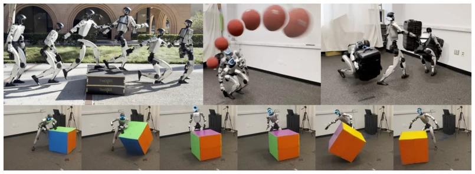
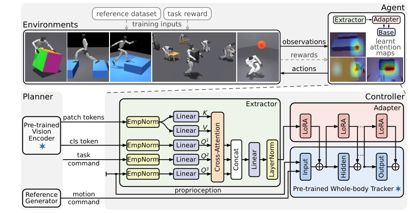
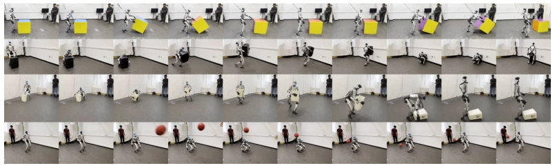
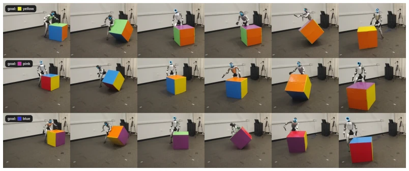
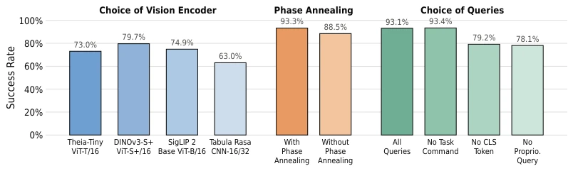

This paper equips 'blind' robots with eyes, but does not change their brains. The core of ViBe lies in 'patching': freezing the pre-trained motion tracker (SONIC) and visual encoder, training only the intermediate extractor and LoRA adapter. This approach indeed saves compute, avoiding training large models from scratch. But the criticisms are also obvious: although claimed to be robust, when playing dodgeball, the robot mistakes the thrower's head for a ball to dodge, indicating that generalization to dynamic interference is not fully resolved. Furthermore, the lack of closed-loop training between planner and controller may cause reference actions to exceed the adapter distribution. However, being able to approach privileged observation performance without distilling a teacher means this cost-performance ratio is indeed high. For researchers who do not want to retrain the entire policy, this counts as a decent 'plugin-style' solution, but do not expect it to solve all dynamic chaos in the physical world, after all, physics engine hallucinations still exist.
The mainstream solution for humanoid robot whole-body control is imitating human actions (Motion Tracking), but such controllers are inherently 'blind' and have no perception of environmental constraints [1]. Traditional hierarchical architectures (Perception-Planning-Control) push environmental corrections to the upper planner, resulting in a lack of visual reflexes at the bottom level, such as crossing steps or dodging balls [3]. Existing perception-control methods either train geometric encoders from scratch sacrificing semantics, or rely on teacher-student distillation [9, 10]. ViBe attempts to fill the gap: utilizing pre-trained visual encoders to extract features, directly adapting to frozen trackers, without distillation, achieving parameter-efficient reinforcement learning fine-tuning. This solves the adaptation gap between pre-trained models and specific tasks, allowing robots to learn to see without breaking original motion priors.
ViBe adopts a post-training framework, keeping the pre-trained visual encoder (Theia-Tiny ViT) and whole-body tracker (SONIC) frozen. In terms of data flow, robot proprioception, task instructions, and global image tokens serve as Query, extracting task-relevant visual feedback from the frozen encoder's Patch tokens. The extractor generates a 128-dimensional perception vector via multi-head cross-attention mechanism, then injects it into the tracker's decoder via LoRA adapter. Training optimizes only the extractor and adapter, using PPO for policy optimization, combined with reference motion dataset and task rewards. Introduces Reference-phase Annealing strategy, gradually shrinking the reset phase range, ensuring the policy masters full reference actions. This design preserves motion priors while granting visual adaptability, achieving parameter-efficient fine-tuning.
Validated on Unitree G1 for four tasks: Repose Cube, Perceptual Walking/Parkour, Full Object Loco-manipulation, and Dodgeball. Achieved zero-shot Sim-to-Real transfer. Results show that ViBe achieved over 90% of privileged observation performance on all tasks, and without distillation. Visual robustness tests indicate that the policy can adapt to strong light, low light, and RGB interference. Ablation studies show that removing CLS token or proprioception significantly reduces success rate (approx 15%), proving multi-Query design effective. Reference-phase Annealing strategy improved stability. But limitations lie in dynamic interference (e.g., misjudging thrower's head in dodgeball) still existing, and planner and controller not closed-loop trained.
其他图片Other Figures

Figure 1: Visual behavior adaptation. A single post-training recipe adapts a pre-trained humanoid tracker to perceptive parkour, dodgeball, loco-manipulation and cube reorientation.

Figure 2: ViBe bridges visual and motor priors. Top: Each task trains the same agent architecture from a reference-motion dataset and task reward. Bottom: An extractor uses global image context, task commands, and proprioception to attend to patch tokens from a frozen vision encoder. The percept is grafted via LoRA adapters to the frozen whole-body tracker.

Figure 3: ViBe adapts reference motion to task dynamics. Zero-shot hardware rollouts show cube reorientation, suitcase transport, trash-can transport, and dodgeball (top to bottom). Each row contains ten equally spaced frames from one uninterrupted fixed-camera rollout.
Figure 6: Adapted policies tolerate substantial appearance shifts. Zero-shot hardware rollouts show Perceptive Walk outdoors in direct sunlight(top), Repose Cube in low light (center), and Re- pose Cube under moving colored illumination (bottom)

Figure 7: A simple planner solves repose task For yellow, pink, and blue goals (top to bottom), the planner selects fixed routine of reference clips while ViBe-adapted perceptive policies handle the rest. Each row shows one uninterrupted hardware rollout.

Figure 8: Controlled ablations on Repose Cube. Success rates vs choice of vision encoders (left), with and without phase annealing (center) and extractor queries (right)